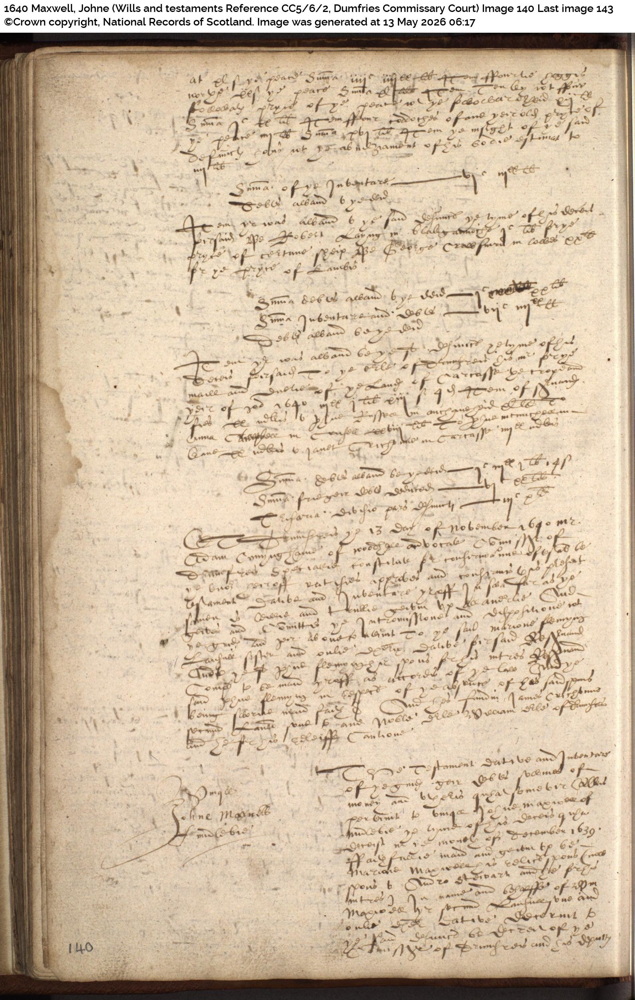
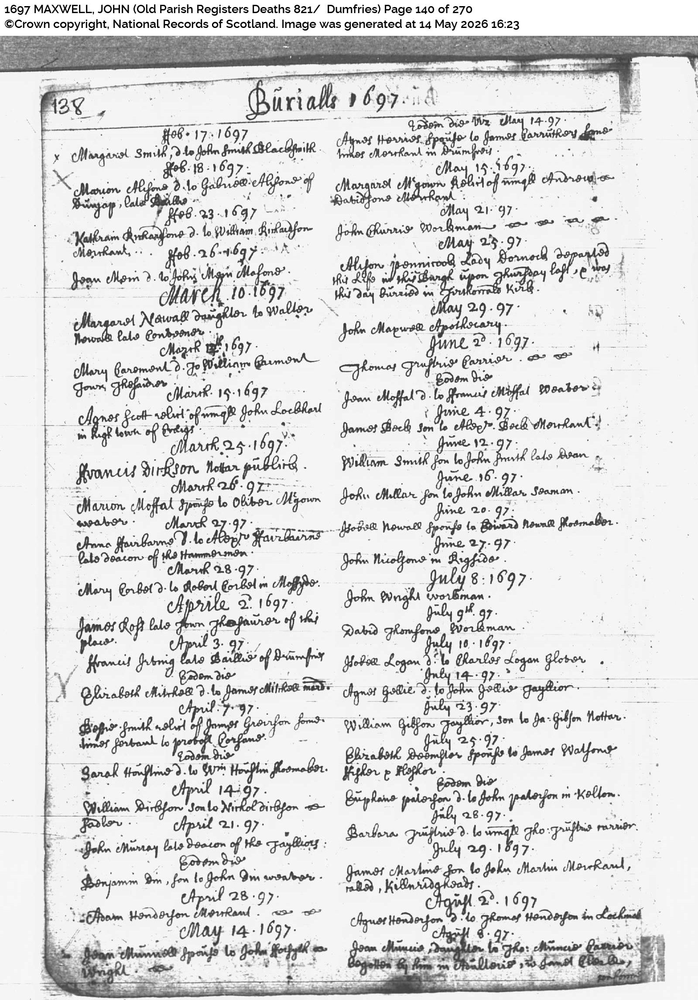

Maxwell Genealogy
Source Document Inventory · Research Sessions May 2026
FTDNA Kit 752085 · James D. Maxwell, son of David B. Maxwell
 FT-1
FT-1
Ancestors of Ralph Davis Maxwell — Printed Chart ✓
File: 1000003677__1_.jpg
Five-generation ancestor chart showing Ralph Davis Maxwell through Adam Maxwell (listed as b.1752 Cumberland Co., PA — corrected by OPR-B0 below to b.1749 Stirling, Scotland).
 FT-2
FT-2
Ancestors — Page 2 with Handwritten Annotations ✓
File: 1000003675.jpg · Dated 4/21/2010
Also records Adam's Revolutionary War service: Indian Spy, 2nd PA Militia, Morristown NJ. Lists Adam's children and siblings. Annotated by David B. Maxwell.
 FT-3
FT-3
Maxwells of Cowhill Chart ●
File: Maxwells_of_Cowhill_Chart.pdf · Published 19 June 2020
Documents Cowhill cadet branch from Robert Maxwell of Cowhill (c1460) through multiple generations.
 FT-4
FT-4
Maxwell BIG-Y SNP Family Tree Chart ✓
File: BigYresultsLordMaxwelljan2025__1_.jpg · maxwell-dna.com, version Jan 2025
Shows Homer Maxwell = ancestor of Maxwells of Portrack; Robert Maxwell = ancestor of Maxwells of Cowhill; both sons of John Maxwell, 3rd Lord (d. Kirtle 1484, Y2357+).


Book of Caerlaverock — Cowhill & Barncleuch Pages ✓ ⭐
Fraser, 1873 · Screenshots: Screenshot_2026-05-13_190804.jpg (pp.594–595) and Screenshot_2026-05-13_190837.jpg (pp.602–603)
Testament of Archibald Maxwell of Cowhill, 1607 ✓ ⭐
Edinburgh Commissary Court · CC8/8/43, pages 692–697 · Provided as transcript by user's father
Archibald Maxwell of Cowhill died September 1606. Written 22 August 1605 at Cowhill. Registered 1607.
All children named: William (eldest, heir), Archibald (executor = later Archibald c1571–1647), Robert (youngest), John (£500), Edward (500 merks), Jealls (daughter), Elizabeth (daughter).
Also: wardship of William and Alexander Maxwell (sons of the late Edward Maxwell of Auchincairne) — consistent with researcher Don's email.


Testament of John Maxwell of Freircarse, 1630 ✓ ⭐
Dumfries Commissary Court · CC5/6/1 · Images 476–478 · Confirmed 31 August 1630
Sister: "Jonat Innergand, my Sister" — connected to Innerweek/Innergand family (cf. James Maxwell de Innerweek, 1643 retour).
Cautioner: "Sand Stirling" — Stirling family. 17 years later, William Maxwell (Herbert's son) married Elizabeth Stirling (SASE-1, p.259).
Modest farming estate: livestock, grain. Confirmed by Commissary of Drumfries.
Charles Maxwell alias Murray of Cowhill, 1726
Dumfries Commissary Court · CC5/6/9 · Images 39–44 · Confirmed 8 October 1726
Episcopalian/Jacobite book collection. Commissar Depute: James Wallace of Carzield.
John Maxwell of Barncleugh, 1722
Dumfries Commissary Court · CC5/6/8 · Images 167–168
Son James Maxwell of Barncleugh named as heir. Confirms the Barncleuch family from Book of Caerlaverock (p.602).

WILL-4John Maxwell of Middlebie, 1640 (Supporting)
Dumfries Commissary Court · CC5/6/2 · Image 140 · Confirmed 13 November 1640
Executrix: Marion Maxwell, his widow. Andrew Stewart also named. Confirms Marion was daughter of Homer Maxwell of Speddoch — documenting the Homer Maxwell/Portrack/Speddoch line.
 OPR-B0 ⭐
OPR-B0 ⭐
Adam Maxwell Baptism — Stirling Associate Congregation, 1749 ✓ ⭐
CH3/559/17, page 187 · Stirling Associate Congregation · Image generated 13 May 2026
Citation: Scotland, Other Church Registers — Baptisms, Stirling Associate Congregation, CH3/559/17, page 187, National Records of Scotland, ScotlandsPeople.
Adam Maxwell born 20 August 1749, baptized 27 August 1749, Stirling. Father: John Maxwell. Mother: Mary finlayson.
⚠ FamilySearch error: FamilySearch indexes this record as "Erskine, Renfrewshire" — incorrect. The congregation was the Stirling Associate church (founded in Stirling by Rev. Ebenezer Erskine in 1733). ScotlandsPeople correctly identifies it as Stirling.
Siblings in same register: John (1748), Margret (1751), Bolkrak* (1753), Daniel (1756), Katharine (1760). *Name misread by indexer.
 OPR-B1
OPR-B1
John Maxwell Baptism — Stirling, 1726 ✓
OPR 490 (Stirling) · Page 425 · Reference 20/431
John was born in the established Church of Scotland but later joined the Stirling Associate (Secession) congregation as an adult.
 OPR-B2 ⭐
OPR-B2 ⭐
Patrick Maxwell Baptism — Holywood, 1690 ✓ ⭐
OPR 830 (Holywood) · Page 24 · Reference 10/24 · Image generated 13 May 2026
Witnesses: Robert Wingate D.G. [Dean of Guild] and George Jaffrey. The "of Barfie" designation identifies the father as a tenant at Barfie farm in Holywood parish.
 OPR-B3
OPR-B3
William Maxwell Baptism — Holywood, 1694 ✓
OPR 830 (Holywood) · Page 72 · Reference 10/72
Confirms Patrick's sibling; confirms John Maxwell of Barfie was still in Holywood in 1694.
 OPR-B4 ⭐
OPR-B4 ⭐
Johne Maxwell Baptism — Dumfries, 1670 ● ⭐
OPR 821 (Dumfries) · Page 184 · Reference 10/184 · Image generated 13 May 2026
Robert Maxwell of Carnsalloch as witness is explained by the Barncleuch pedigree (FT-7): his wife Agnes Irving was the widow of John Maxwell of Barncleuch — a direct family connection into the Dumfries Maxwell community.
On the same page: Issabell Maxwell, daughter of William Maxwell, baptized 19 July 1670 — confirming Jon Maxwell and William Maxwell (son of Herbert of Freircarse) were brothers both active in Dumfries in summer 1670.
 OPR-B5 ⭐
OPR-B5 ⭐
John Maxwell Baptism — Dumfries, 1654 ● ⭐
OPR 821 (Dumfries) · Page 152 · Reference 10/152 · Image generated 14 May 2026
Proposed = John Maxwell of Barfie. A man born 13 August 1654 would be exactly 36 years old when Patrick was born in September 1690 — a perfectly normal age for a first child.
The witness identified as "John Maxwell his father" suggests Jon Maxwell's own father was also named John Maxwell — consistent with naming patterns in the Maxwell of Freircarse family.
Page also shows: "Robert [son] to capt Edward Maxwell… Witness Rl Earls of Nithsdale" — demonstrating multiple Maxwell branches active in Dumfries simultaneously.
Additional Dumfries OPR Baptism Records (1657–1675) ●
OPR 821 (Dumfries) · Pages 160, 174, 181, 200
OPR-B6 (1667, p.174): Register heading "Mr John Fraser Clerke." Multiple Maxwell entries.
OPR-B7 (1669, p.181): Johne Maxwell of Woodhead (possibly illegitimate). "William Newlaw" as witness — the Newlaw Maxwell branch in Dumfries community.
OPR-B8 (1675, p.200): Agnes Maxwell, daughter of John Maxwell, 13 Jun 1675 — part of Jon Maxwell's Dumfries family cluster.
OPR-B9 (1657, p.160): William son to William Maxwell, 2 April 1657 — second child of William Maxwell (son of Herbert of Freircarse, married Elizabeth Stirling 1647).
 OPR-M1
OPR-M1
Robert Maxwell and Violet Craik — Holywood, 1696 ✓
OPR 830 (Holywood Marriages) · Page 84 · Image generated 13 May 2026
Confirms Porttrack estate = Homer Maxwell/Portrack branch, in Holywood parish. Robert Maxwell of Porttrack and John Maxwell of Barfie were neighbors in the same small parish.
Two Dumfries Maxwell Marriages — 1642
OPR 821 (Dumfries Marriages) · Pages 46 and 49 · Images generated 14 May 2026
OPR-M2 (p.46): Johne Maxwell + Jeane Nisbit, April 1642. Kirk Session proclamation. Groom's designation unclear. Possibly Jon Maxwell cordiner.
OPR-M3 (p.49): Johne Maxwell Laord [=Laird] + Agnes Laurie, November 1642. Groom is a laird — therefore NOT Jon Maxwell cordiner. Agnes Laurie described as "Progone [progeny] of Maxvelms" — Maxwell ancestry through her mother.

OPR-D1John Maxwell Apothecary — Death, Dumfries, 1697
OPR 821 (Dumfries Deaths) · Page 140 · Image generated 14 May 2026
An apothecary (pharmacist/medical professional) in Dumfries town. Almost certainly a different person from John Maxwell of Barfie (a farm tenant in Holywood). No testament found in Dumfries Commissary Court for this individual.
Also on this page: "Margaret Nawall daughter to Walter Novalle late Cordoner" — confirms the shoemaking (cordiner) trade was present in Dumfries in 1697, consistent with Jon Maxwell cordiner.


Index to Particular Register of Sasines, Dumfries, 1617–1671 ✓ ⭐
Published index · Pages 192, 259, 271–272
Page 192 (Kirkpatrick section):
"Kirkpatrick, John, of Freircars" — multiple entries 1618–1626 (last: 2 Jun 1626)
John Kirkpatrick held Freircarse before John Maxwell. Transition occurred between 1626 and 1630.
Page 259 (Maxwell section) — KEY ENTRY:
Establishes: Herbert Maxwell of Freircarse had a son William who married Elizabeth Stirling in 1647. William Maxwell (son of Herbert) is the brother of Jon Maxwell cordiner. The Stirling cautioner in the 1630 testament connects to this same family.
Also on p.259: "Maxwell, Elizabeth Scott, spouse of John, of Bromeholme" — confirms John Maxwell of Broomholm (another son of Archibald d.1606) active in same period.
"Maxwell, John, of Cowhill, fiar — 29 Jan 1647" — confirms John Maxwell of Cowhill (m.Anna Elliot) held Cowhill in 1647.
Maxwell Retours, Dumfriesshire, 1629–1663
Inquisitionum ad Capellam Regis Retornatarum Abbreviatio
Key entry (6 Mar 1646): "Robertus Maxwell de Carnsalloche, heres Georgii Maxwell in Carnsalloch, patris" — Robert Maxwell of Carnsalloch was served heir to his father George Maxwell in 1646. This is the same Robert who witnessed the 1670 Dumfries baptism (OPR-B4).
Key entry (9 Jun 1656): Agnes Maxwell and Barbara Maxwell, heirs portioner of Robert Maxwell of Dunwoodie — confirms Robert of Dunwoodie left only daughters (as stated in Archibald's 1606 will).
Key entry (10 Aug 1643): James Maxwell de Innerweek, heir of William Maxwell of Kirkhous (his brother) — Innerweek may connect to "Jonat Innergand, my Sister" in the 1630 Freircarse testament.
UNDWIN, father of Maccus (~1070)
└── [~12 Lords of Maxwell — Y2357 SNP chain — DNA + historical record] ✓
└── JOHN MAXWELL, Master of Maxwell (d. Kirtle 22 July 1484)
★ Y2357 SNP CONFIRMED for Kit 752085 · GD2 from Caerlaverock line ✓
│
├── ROBERT MAXWELL → Maxwells of COWHILL ✓ Book of Caerlaverock
│ └── SIR JOHN MAXWELL OF COWHILL (~1500–1547)
│ └── ARCHIBALD MAXWELL OF COWHILL (~1530–1606) ✓ Testament CC8/8/43
│ ├── JOHN MAXWELL (son, £500 legacy) ✓ WILL-0
│ │ └── JOHN MAXWELL OF FREIRCARSE (d.1630, Dunscore) ✓ WILL-1
│ │ └── HERBERT MAXWELL OF FREIRCARSE ✓ SASE-1 p.259
│ │ ├── WILLIAM MAXWELL (m. Elizabeth Stirling 1647) ✓
│ │ │ Jonet (1649), William (1657), Issabell (1670)
│ │ └── JON MAXWELL, CORDINER, DUMFRIES ✓ OPR-B5
│ │ └── JOHN MAXWELL (b.13 Aug 1654, Dumfries) ✓ OPR-B5
│ │ ↕ ? [~15 miles · right age · GAP]
│ │ JOHN MAXWELL OF BARFIE, HOLYWOOD ● proposed
│ │ └── PATRICK MAXWELL (b.14 Sep 1690, Holywood) ✓ OPR-B2
│ │ └── JOHN MAXWELL (b.25 May 1726, Stirling) ✓ OPR-B1
│ │ └── ADAM MAXWELL (b.20 Aug 1749, Stirling) ✓ OPR-B0
│ │ └── DAVID MAXWELL (~1798) ✓
│ │ └── SAMUEL H. MAXWELL (1833) ✓
│ │ └── MACK YOUNG (1864) ✓
│ │ └── RALPH EDGAR (1887) ✓
│ │ └── RALPH DAVIS (~1925) ✓
│ │ └── DAVID B. MAXWELL [Kit 752085] ✓
│ │ └── JAMES D. MAXWELL ✓
│ │
│ └── ARCHIBALD MAXWELL OF COWHILL (c1571–1647)
│ └── JOHN MAXWELL OF COWHILL (m. Anna Elliot)
│ → THREE DAUGHTERS, NO SONS ✓ Book of Caerlaverock p.594
│
└── HOMER MAXWELL → Maxwells of PORTRACK
└── ROBERT MAXWELL OF PORTTRACK (1696, Holywood) ✓ OPR-M1
John Maxwell (b.13 Aug 1654, Dumfries) → John Maxwell of Barfie (Holywood, 1690)
These men are 15 miles apart, the right age relationship, in the same region. No marriage, death, or testament record bridges them — almost certainly due to lost Holywood/Dunscore OPR records and absence of commissary testaments for farm tenants.